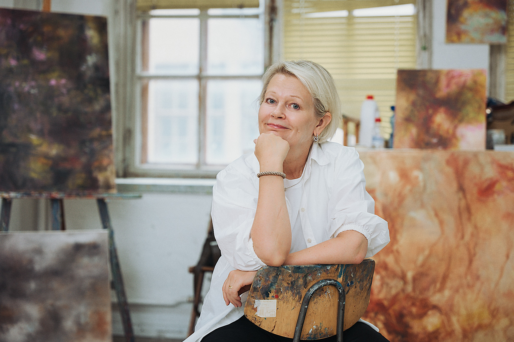

I cannot compare painting to anything else I do, not even writing with flow. I have many roles in working life.
I have observed and examined paintings as long I can remember. I have made two Master Thesis, one in history of art, later I defended a doctorate on an interdisciplinary topic including art and culture. I love old classics. I interpret my visual experiences, memories in my contemporary art.
I paint often semi-abstract landscapes, so called wanderer´s horizons. Fairy impressions fascinate me too.
I have studios in Cable Factory Helsinki and in Karjaa. I paint frequently in France too.
Elina Melgin, 2025
Picture by: Sam Jamsen